現代のシーシャ ＞ 進化 ＞
シーシャについて。ドミトリー・フングレーエフ、イリヤ・ロマノフ
これからお伝えする内容は、ドミトリー・フングレーエフとイリヤ・ロマノフの編集のもと、かつての古いフォーラム「フーカプロ（ХукаПро）」に初めて掲載されたものです。彼らはこの非常に貴重な資料を、当チャンネルでの公開のために快く共有してくれました。
ある仮説は、インドのチラム（чилам）をシーシャと結びつけ、チラムが下部（ココナッツや、その他の水を入れる容器）とは別個に使われていた可能性があると考えています。これによって、シーシャの一部、あるいはシーシャ全体を指す言葉が、インドの北および北西の地域へと移っていった経緯が説明できるかもしれません。というのも、よく知られているとおり、ムガル帝国（16〜19世紀）は、現在のインド、パキスタン、南アフガニスタンの領域を占めていたからです。シーシャの祖先がアフガニスタン、さらにはブハラ・ハン国およびヒヴァ・ハン国へと広まっていったと推測できます。ウズベキスタンとタジキスタンでは、シーシャはチリム（чилим）という名で呼ばれ、その主要部分はひょうたんから作られていました。ロシア連邦および旧ソ連の一部の国々では、この言葉でタバコ用のボウルを指していました。
シーシャがインドから広がった主な拡大は、西の方向、すなわちペルシアへ、そしてさらに先へと進みました。サファヴィー朝（1500〜1736年）の時代にシーシャがどのような姿をしていたかを想像するのは難しいですが、同王朝の二代目シャーであるタフマースブ1世（1524〜1576年）の治世には、シーシャはすでにペルシアで知られていたと考えられています。一部の資料によれば、当初ペルシアのシーシャのシャフトは一塊の木材から作られ、容器にはココナッツの殻やひょうたんが用いられていたといいます。
世界では、シーシャを指す別の名称のほうがはるかに広く普及していますが、その多くもやはり同じインドに由来するものです。たとえば、トルコや、その南側に隣接する国々（キプロス、シリア、レバノン、イラク、ヨルダン、イスラエル、パレスチナ）、西側（ギリシャ、アルバニア）、東側（アルメニア）では、シーシャはアラビア語の「ナルギラ（nargila）」に由来する名前で呼ばれています。イスラエルでは、シーシャはヘブライ語で同じ語「ナルギレ（nargyleh）」と呼ばれます。
トルコでは「ナルギレ（nargile）」。ギリシャとキプロスでは「ナルギレス（nargilés）」。アルメニアでは「ナルギレ（nargile）」。アルバニアでは「ナルギレ（nargjile）」。この言葉はペルシア語の「ナルギレ（narghile、ココナッツ）」に由来し、それはサンスクリット語の「ナリケラ（narikela）」（これもまたココナッツを意味します）から借用されたものです。これはおそらく、容器がココナッツで作られていた初期のシーシャを指し示しているのでしょう。今日では、こうしたシーシャはインド、ネパール、イエメン、エジプトで見ることができます。それらの工業的な発展もまた、中東諸国やエジプトに広まっています。
イエメンの携帯型「ルシュバ（rushba）」は、上述したものと同一の装置であり、安定させるために適当な容器に差し込まれて使われ、ココナッツの殻、彫刻が施された木製のシャフト、葦またはそれに類するチューブから成っています。エジプトのシーシャの一種もまた、ココナッツに由来します。それが「ゴザ（goza）」です。
ゴザの歴史はエジプトで知られていますが、レバノン、イスラエル、そしておそらく中東の他の国々でも見ることができます。ペルシア湾岸諸国やアラビア半島では、形を変えて別の名前で呼ばれています。通常この装置は「ゴザ（гоза）」と呼ばれますが、実際には「ジュザ（жуза）」であり、アラビア語で木の実を意味します。これは簡単に説明できます。最初期のシーシャはココナッツの実と竹、あるいは葦から作られていたのです。
時とともに、シーシャはステータスの象徴という性格を帯びるようになり、それは必然的にその外観や価格に反映されました。精巧なインド、ペルシア、アラビアのシーシャは、決して誰もが手に入れられるものではありませんでしたが、もちろん、同じココナッツと竹から作られた手頃なシーシャがなくなることはありませんでした。下層カーストのインド人たちは、ココナッツの実と棒から、量産的に簡素な「ナリケラ（narikela、ココナッツ）」を作っていました。この技術は、シーシャが芸術品となるはるか以前から広く普及しており、ペルシアでも、またアラビアや北アフリカでも、こうした最も単純な装置が知られるようになりました。
エジプトのゴザは、マラバル（南インド）、イエメン、サウジアラビアのフーカ／マダア／ブリの簡略化された複製となりました。ココナッツの実から作られるジュザは、今でもインドや中東のどこかで作られています。
KhalilMamoon や MagdyZidan のような一部のエジプトの製造業者は、流行を踏まえて、このシーシャを全体的にステンレス鋼から製造しています。これは、エジプト人たちの言葉によれば、その国における装置に対する民衆の認識とは根本的に相いれないものです。
中東およびエジプトの最も単純なジュザの子孫たちは、いくらか短くなりつつも、木製のシャフトは保っていました。
ジュザに関する情報を見つけるのは極めて難しいのですが、それはこの名称がエジプトの文化において、エジプト各地の数多くの非合法な喫煙所でのハシシ喫煙と密接に結びついているためです。これらの喫煙所を当局が最終的に一掃できたのは、ようやく70年代の終わりになってからのことでした。
もう一つの理由は、先に述べたジュザに対する「民衆的な」見方にあります。現在のエジプトでは、この言葉のもとで「浮浪者のシーシャ」が連想されます。これは身の回りの材料から作られた自作の装置です。たいていは缶や瓶で、その蓋に二つの穴が開けられます。一つはボウル用、もう一つは吸口（マウスピース）用です。その際、吸口としては中身を抜いた竹や葦の茎、あるいはその他の適当なチューブが使われます。この「伝統的な」ジュザの概念と、現代の工場製のジュザのバリエーションとは、もちろん何の共通点もありませんが、まともなエジプト人はジュザ型シーシャを避けて通ります。
一部のメーカーが製造しているゴザは、伝統的なものとはかけ離れています。たいていはサイズが小さく、全体が金属で作られているか、木製のシャフトを持っています。また、香り付けされていないミックス用の金属製ボウルや、中空の長いチューブの形をした金属製の吸口を備えていることもあります。底が平らになっていないことが多く、そのために喫煙のセッションの間じゅう、手で持っている必要があります。
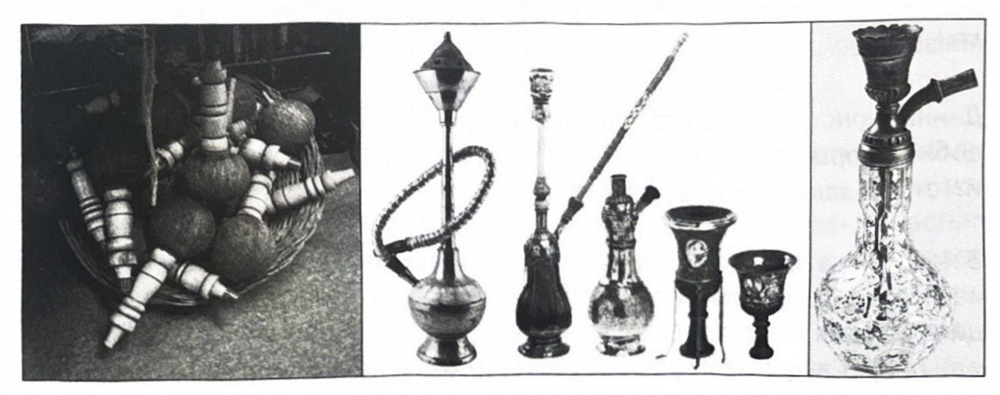
このような構造と外観のシーシャは、さらに西方、ペルシア湾岸や北アフリカの方向へと進む中でも保たれました。ペルシア湾岸（クウェート、バーレーン、カタール、アラブ首長国連邦）のシーシャは、「ゲド／カドゥ（gedo/qadu）」と呼ばれ、やはり同じ構造を受け継いでいますが、その容器は粘土で作られています。
ある時点で、ペルシアのシーシャは家庭用品から転用された容器を備えるようになりました。そのことは、そのインド名「フッカ（hukka）」（ヒンドゥスターニー語：デーヴァナーガリー文字、ナスタアリーク文字（huqqa）、グジャラート語（hukko））が示しています。推測では、この言葉は、さまざまな装身具を保管するためのペルシアの壺に由来するとされています。
イギリス人がシーシャと出会ったのは、インドを植民地化した時代でした。そのため、英語圏全体や西ヨーロッパの一部では、言語的特徴を踏まえて変形した「フーカ（hookah）」という言葉で呼ばれています。
インドでは、シーシャは従来の構造を保ちつつ、さらなる発展を遂げ、真の贅沢品となり、インドの職人たちの技巧の手本となっていきました。とりわけ際立っているのが、コイランディ（Koyilandy）の街のインド製フッカです。16世紀の初め、イエメンの商人たちがインドの南西海岸、ケララ州マラバル地方に位置するコイランディの街に定住しました。彼らの関与のもと、地元の職人たちによって、装飾の文様に心を奪われるようなモチーフをあしらった、入り組んだ装飾のシーシャが作り出されました。容器には依然としてココナッツの殻が用いられ、彫金と象嵌（インクルステーション）で縁取られ、そこに彫刻を施したシャフトと吸口、またはホースが差し込まれました。これらのシーシャは北インド、パキスタン、ペルシア湾岸で非常に人気を博し、「マラバルフーカ（MalabarHookah）」または「コイランディフーカ（KoyilandyHook）」として知られました。
この構造は、長年にわたってこの地域全体の基本形となりました。同様の形をした、豊かに象嵌された容器を持つペルシアのシーシャは、19世紀に至るまで製造されていました。
今日では、コイランディの街では、これらの伝説的なシーシャは、残念ながらもはや製造されていません。しかし、その形と構造を完全に保った同一のシーシャが、現在ではイエメン（そこではより多く「マダア（mada'ah）」または「ブリ（buri）」という名で呼ばれます）やサウジアラビアで作られています。ここでは、それらは受け皿（ブリュードツェ）と、極めて長く太いホースを備えるようになりました。
同様の種類のシーシャは、「ブリ（boury / buri、ホルン）」とも呼ばれ、エジプトでも見られます。一般に、この言葉のもとでは、入り組んだ脚や、自らの軸を中心に回転できるようにする台座に乗ったシーシャが連想されます。ブリは全体が金属製であるか、ガラスの球状フラスコからシャフトの主要部分と下部の台座がねじって取り外せるようになっています。
インド、パキスタン、モルディブ諸島（ここでは「グドゥグダー（gudugudaa）」として知られ、おそらくヒンディー語でシーシャを意味する語の一つである「グラグリ（guraguri）」に由来します）の現代のシーシャは、ディベヒ語での変形を踏まえると、マラバルフーカとはまったく似ておらず、むしろ現代のトルコ、中東、北アフリカのシーシャと共通点が多くなっています（もっとも、外見上はそれらとも大きく異なり、非常に特徴的で、よく見分けのつく姿をしています）。それらの容器は粘土または金属から作られています。
ペルシアを経て北および西の方向へと進む中で、シーシャはタバコと出会いました。ほぼ同じ頃、シーシャは、現代の、私たちにとって見慣れたシーシャに結実する特徴を帯び始めました。そこでは主要な部分は容器ではなくシャフトであり、その基部がボウル、水を入れる容器、そして吸口を一つにまとめて接続します。これらの装置の原型は、すでにガラス製のフラスコを備えたものとして、1622年にヨハン・ネアンデル（Johann Neander）が著書『タバコロギア（Tabacologia）』の中で紹介しています。
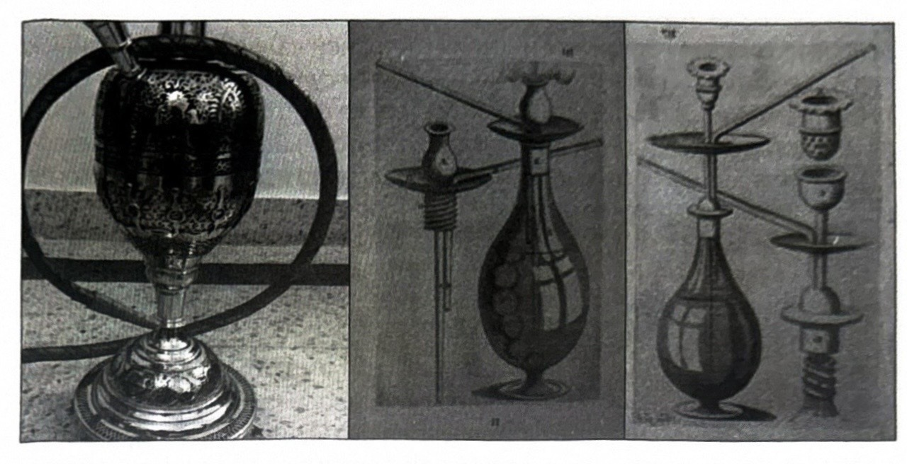
オスマン帝国がペルシアと隣接していたおかげで、シーシャは帝国やスルタン国の上流階級の間で絶大な人気を得ました。当時、オスマン帝国は東のペルシアとの国境から西のモロッコまで、南のエチオピアから北の中央ヨーロッパまでの領域を占めていました。シーシャが帝国全土や近隣諸国へと広まっていったことは容易に想像できます。オスマンの職人たちはシーシャを芸術品へと変え、シャフトを優美な鍛造で豊かに象嵌し、フラスコやホースを宝石やモザイクで飾り立てました。そして18世紀の中頃から終わりにかけて、シーシャはトルコのコーヒーハウスに欠かせない一部となりました。
現代のトルコのシーシャは、古来の伝統を守って製造されています。それらに独自性を与えているのは、独特な構造のホース（マルプチ、марпуч）と、シャフトの製造に青銅や銅を用いる点です。同時に、現代のトルコのシーシャはバルブ（弁）を備えていることを誇りにできます。シャフトへのボウルの取り付け方は、内側式のものも外側式のものもあります。
トルコのシーシャの主な特徴の一つがマルプチです。これは特別なホースで、大きなサイズと、非常に大きく長い吸口を特徴としています。スルタンの時代には、こうしたホースは桜の木の一枚材や、その他の貴重な木材から作られていました。その際、木の成長過程で金属製のリングや締め具をはめ込み、幹がまっすぐになるようにしました。オリジナルのマルプチの製造には、約10年もの歳月が費やされることもありました（もちろん、まず第一に木の成長のためです）。シーシャは、スルタンのハーレムの女性たちも、一般の市民たちも吸っていました。
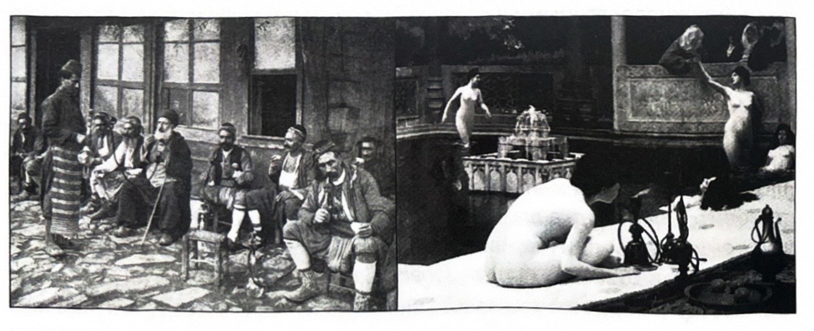
アルバニア、ボスニア・ヘルツェゴビナでは、シーシャを「ルラ（лула）」または「ルラヴァ（лулава）」と呼びます。これはロマ語や一部の南スラヴ語でパイプを意味し、「シシェ（шише）」はシーシャの容器を指します。オスマンの支配（あるいは単なる隣接）のおかげで、これらの名称はトルコ語によく似ています。トルコでは「ルレ（lule）」がタバコ用のボウルを指し、「シセ（sise）」が瓶を意味し、これもまたフラスコを指します。これは「シセ（sise）」という言葉がペルシア語の「シセイェ（siséye、ガラス）」に由来することで容易に説明できます。イスタンブールのガラス職人たちはその技で名を馳せていました。極めて精巧なガラス製のフラスコが、シーシャの容器として主流になっていきます。柔軟なホースがパイプ型の吸口を完全に駆逐し、シーシャのシャフトの基部は、今やシャフト自体に加えてホース用のポートをも含むようになりました。
中東、ペルシア湾岸、北アフリカのオスマンのスルタン国では、トルコ語の「シセ（sise）」がアラビア語の「シサ（sisa、sheesha あるいは shisha と読む）」へと変形し、今では最も多くの場合、シーシャそのものを意味するようになっています。エジプトでは、この言葉で、私たちに見慣れた、トルコのスタイルを受け継いだ、ガラス製のフラスコ（支えの役割も果たします）、受け皿、ホースを備えたシーシャが呼ばれます。シリア、レバノン、ヨルダン、チュニジア、アルジェリア、モロッコのシーシャも、このスタイルで作られています。
そしてイギリス、アメリカ、それらに隣接する国々では、「シーシャ（shisha）」という言葉で、シーシャ用の香り付けされたミックスを指します。また、フーカ（hookah）のほかに、ときには英語の語句「ウォーターパイプ（waterpipe、水のパイプ）」も使われますが、この用語はむしろ水道設備の部品に対してのほうがよく当てはまります。やや稀には、もう一つの英語名「ハブルバブル（hubble-bubble、hubble はこぶ、bubble は泡）」も用いられます。「こぶ」という言葉はペルシア語にもほぼ同じ響きで「ハブル（habl）」として見られます。ウルドゥー語では「こぶ」はナスタアリーク文字で記されます。
現在のイランでは、シーシャを「ガリヤン（galyan）」と呼びます。この言葉はアラビア語の「グルヤーン（ghlyan、沸騰する。語根は「沸く」を意味する agla）」に由来すると考えられています。ロシア語では、この言葉が歪んだ形「カリヤーン（кальян）」が使われています。ちなみに、このように呼ぶのは旧ソ連諸国の領域だけです。イランのシーシャでは、しばしば柔軟なホースの代わりに、長い交換式の吸口が付いています。各喫煙者がそれぞれ個人専用のものを持つと考えられています。
シーシャがインドから移っていったもう一つの方向についても、まだ触れていませんでした。それは東への方向です。バングラデシュとネパールを経て、シーシャはほとんど原始的な原初の姿のまま、東アジアおよび東南アジアへと入り込みました。
東南アジアの国々（タイ、ラオス、ベトナム）では、シーシャは二つの要素にまで簡略化され、二本の竹の茎から成る、単調で原始的な装置の一群を生み出しました。それらは現代世界では一般に「ボン（bong、タイ語の bng に由来）」という総称で知られていますが、結局タバコには適応しませんでした。
チベットや中国では、シーシャという装置に対して、より責任を持って実用的に取り組みました。真鍮や銅で作られた、優美な携帯用のタバコ用パイプです。中国ではそれらを七宝焼き（クロワゾネ、cloisonné）で飾り、本物の芸術品へと変えました。こうしたパイプはそれぞれ、中国の職人の最良の伝統にのっとって、容器、それに溶接されたシャフトの基部（この部分が取り外せることもありました）、交換式のタバコ用ボウル（セットに二つ付いていることもありました）、容器に取り付けられるタバコ袋、そしてパイプを使用に向けて準備し、手入れするための道具一式から成る、完全なセットとなっていました。外見上の大きな違いにもかかわらず、シーシャの動作原理は保たれていました。今日では、こうしたミニシーシャは、骨董店やコレクターのもとでしか見つけることができません。そして中国は、自動化された工場で製造される、トルコスタイルの現代のシーシャの、世界最大の生産国かつ輸出国となっています。
今日では、多くの国で、エジプト、シリア、中国の製造業者による積極的な輸出政策によって、自国のシーシャが押しのけられています。たとえば、レバノンやトルコでは、中国製のシーシャで喫煙している人々を簡単に見かけることができますし、中東、アラビア半島、ペルシア湾岸、北アフリカ（リビア、チャド、スーダンを含む）の大半の国々では、シリア製やエジプト製のシーシャで喫煙している人々を見かけます。
マックス・ポポフが語る、シーシャ「ドゥシャ（Душа）」の創造について
（インタビューからの抜粋）
マックス・ポポフは、ロシアで最も美しいシーシャの一つ「ドゥシャ（Душа、魂）」を作り上げました。それも不思議なことではありません。マックスは15年間デザインに携わってきました。ちなみに、この本の表紙も、まさに彼が手がけたものです。
＞ シーシャ「ドゥシャ」を作るというアイデアはどうやって生まれたのか、教えてください。なぜこれに取り組もうと決めたのですか？
さて、ここはどうやら「魂（ドゥシャ）」抜きには済まなそうですね。魂を曲げずに、正直にお話ししましょう。私はただ稼ぐ手段を探していただけなのですが、これに引き込まれ、ひっくり返されてしまいました。そして年を追うごとに、この仕事に対する私の中の考え方が変わっていきます。最初は市場に参入すること、次に質の高い製品を作ること、その次は使いやすく実戦的な製品を作ること、そして今は、そこに物語を込めようと決めました。そして、おそらく、自分が持っているものを土台にして、自分のための新しい仕事を考え出したのです。おそらく今、私はブランドの教育（醸成）に取り組んでいるのでしょう。
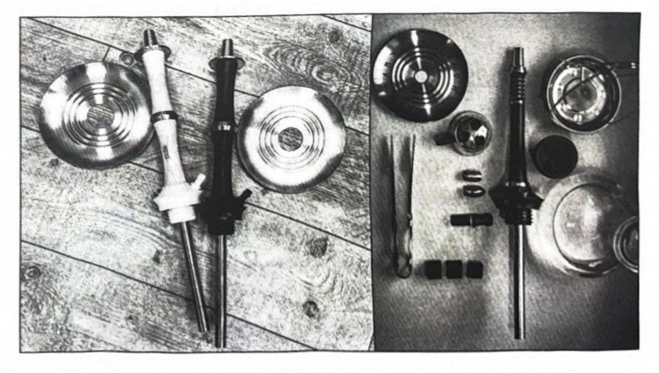
＞ 名前はどうやって思いついたのですか？
そして、なぜまさにその名前に決めたのですか？
最初は別の名前、別のイメージとデザインのシーシャでした。それは別の発展の方向性を持ち、まったく別の物語を持つはずでした。あるいは、まったく物語を持たなかったかもしれません。クラスノダールの友人が私を説き伏せてくれたのです。彼の名前の提案が、皆さんが目にしているものを生み出したのですが、提案されたのは少し別の形でした。「The doosha」が、私のもとにメッセージで届きました。そしてこの「ゼ・デューシャ（зе дюша）」が、私の中で共鳴を呼んだのです！ というのも、魂とは、単純でありながら同時に複雑なもの、誰もが持っているもの、そして市場には存在しなかったものだからです。シーシャの名前という概念を打ち破るものです。ただ、私は自分なりにロシア語表記を加えました。そのことで私たちは少し言い争いましたが、彼が折れてくれました。結果的に、見込み違いではありませんでした。それは今でも珍しい名前ですが、ただ今では、これを土台にして、私はイメージや感情を伴った物語を作り出しています。それによって、私の考えでは、製品の名前をさらに深く引き出しているのです。
＞ シーシャの発売前に、どんな困難に直面しましたか？
ありとあらゆる困難に。そして今でも直面しています。なぜなら、私は下請け業者の力を借りて製品を生産しているのですが、ちなみに彼らはロシア的なメンタリティの持ち主なのです。でも、おそらくそこにこそ本質があるのでしょう、ロシアの魂というやつです。投資の困難、生産の可能性に制約されたデザインを作る困難——その生産はその生産で予算に制約され、さらに製品の小売価格にも制約されています。図面を作る困難、何しろ私はすべて自分でやっているのですから。
今この瞬間の困難は、プロセスを委任することです。なぜなら、売上は伸び、需要は高まっているのに、電話や問い合わせには、以前と変わらず自分で応対しているからです。というのも、かつてあらゆる情報源に自分の個人の電話番号を載せてしまったからです。正直で、心のこもったゲームをするためにと。今やそれが、心理状態の困難へと発展してしまいました。夜中の3時に心を割った会話の電話がかかってくるのは、もちろん最高ですが、時にはつらいものです。
＞ 売上には満足していますか？
ええ、もちろんです。でも、もっと伸ばすこともできたでしょう。私は人為的な品薄状態を作り出しています。少なくとも、私はそう呼ぶことに慣れています。在庫がないことが非常に多く、私は製品を購入できる店の連絡先を流しています。たとえば、今この瞬間、私はすべてのモデルを生産から外して、新しいモデルラインを始めようとしているのですが、注文は一時間ごとに舞い込んできています。だって、私は何年も同じことを作り続けることなんてできないのです。それはつまらないですから。
＞ あなたの考えでは、ブランドの「フィーチャー（ウリ）」は何ですか？
いや、名前と製品への個人的な思い入れを除けば、つい最近まで、これといった特徴的なウリなどなかったのです。それはただの実戦的な働き者で、多くの人のニーズを満たしてくれるものでした。でも今は、物語を作り出し、その物語に合わせて製品を適応させることに興味があります。今では少なくとも、語り合える話題があります。とはいえ、私はシーシャの外観という点で何か傑作を作り出そうとしているわけではありません。それは相変わらず、見慣れた普通の、クラシックな構造のシーシャですが、物語の中で使われるイメージに合わせて調整された、細かな特徴を持っているのです。大ざっぱに言えば、シーシャとは、情報を運ぶためのスポンジなのです。
＞ 「ドゥシャ・フレンキ（Душа Френки）」を作るというアイデアはどうやって生まれたのですか、そしてなぜまさに「ドゥシャ・フレンキ」だったのですか？
かつて、私の製品にはハイプ（話題性）がない、ウリがない、特徴がないと言われたことがありました。まさにこれは、先ほど話したことです。そしてそれは、私にとってある種の意地でした。みんなが口々に言っていたのです。マグネット、ブロー（吹き抜け）、ママイ（mamay）……と。まさにそのとき、私にこの自己中心的で図々しいアイデアが浮かんだのです。ちなみに、それは言ってみれば、ここ直近3年間を振り返った総括のようなものでもあり、当時トップだった製品を取り上げ、おそらくそれらに敬意を表すものでもありました。そして「フレンキ（Френки）」という名前は、瞬時にプロジェクトの上に浮かびました。なぜなら、それは本質的に、さまざまな部分から縫い合わされた生命体だからです。しかも、このキャラクターの外見は、大胆かつ冷静沈着な所業——他人のものを盗っただけでなく、それをみんなに語ってしまうという——の物語に完璧に合っていました。
これら三つの特徴に加えて、小さなシーシャというトレンドも利用しました。そのため、フランケンシュタインはすぐに「フレンキ」になりました。とはいえ、上記のすべてをそのままの形で使い、堂々とパクって顔色一つ変えないというのは、あまり正しいことではありません。だからこそ、私はそれを自分独自のデザインにくるみ込みました。どうやら面白いものができ、望んでいたものになったようです。それに、反響は私の予想を超えるものでした。
＞ 新しいプロジェクト「ドゥシャ・ヴァリキリー（Душа Валькирии、魂のワルキューレ）」——私たちは何を期待すればいいのでしょう？ そして、その物語はどんなものですか？
おお、これは長くなりますよ。私が何を気に入っているか分かりますか？ それは、私が一つのゲームを作り出したということです。ティザーの段階で、すでに自分の消費者に製品への興味を植え付けようという期待を込めて。そのティザーでは、一見すると何も語られていないのですが、彼らはすべてを理解し、13秒の中に仕込まれたすべてのイースターエッグを解き明かしてしまったのです。だって、よく見てください、そこにはシーシャについては一切何も語られていないし、シーシャの名前も書かれていないし、それがブランド「ドゥシャ」の新しい限定シーシャだということすら書かれていないのですから。
ところが人々は、名前を当てただけでなく、この動画にまつわる一つひとつの要素を解き明かし始めたのです。秒数、鳥の鳴き声、画面中央のルーン文字、物語の性格を示唆する曲をShazamで特定したり、などなど。もちろん、間違った説もあります。特に戦争に関連したものですが、それで今や私の目標は、6月に予約注文を出さないこと……。でも、話したいのはそのことではありません。私はただ、このゲームが支持され、人々がそれを読み解き始めたことが気に入っているのです。そしてそれが私のモチベーションになっています。そう、まさにそれが今後の仕事へのモチベーションになるのであって、すべての夏季テラスがシーシャ「ドゥシャ」で埋め尽くされることではないのです。
さて、話が逸れましたね。次のシーシャのイメージとして、私はワルキューレを選びました。私の考えでは、このキャラクターは魂と直接結びついています。彼女たちは運命を司り、戦死した戦士たちの魂をヴァルハラへと連れていきました。そして、ゲーム『ゴッド・オブ・ウォー4（God of War 4）』におけるワルキューレの最後の登場でも、彼女たちを苦しみから解放するためには（そこでは彼女たちは呪いを償いながら、人間の姿に封じ込められていました）、殺して魂を解放する必要があるのですが、彼女たちは熟練の戦士なので、殺すことは不可能なのです。面白いでしょう？
とりわけ、会社のスローガン「すべては過ぎ去る、しかし私は残る（Все пройдет, а я останусь）」を思い出すとなおさらです。さて、こうした物語をみんなに語り、神話に踏み込んでいくこと、などなどは、私はあまり面白くないと考えました。しかも、その場合は、私は知識人たちの批判にさらされることになるでしょうし。そこで私は、これを土台にして自分の物語、言ってみれば許容しうる続編を作り出そうと決めたのです。
想像してみてください。彼女はもうずっと長い間この地上にいて、いまだに誰も彼女を殺すことができず、その苦しみの中で彼女は自分の快楽を見いだしたのです。彼女は相変わらず神々しいほど美しく、私たちの時代に、私たちの間にいて、快楽と苦痛を同時に与えることから快感を得ています。いわば、ファム・ファタール（運命の女）です。
私が思うに、これは、かっこいい物語、面白いシーシャの外観、そして喫煙という行為の本質すべての描写という点で、完璧に当てはまります（私たちはそれが好きで、それを欲し、それが身体に何ら良いものをもたらさないと分かってさえいるのに、それでも続けて快感を得ている、という）。
彼女は、残酷さ、現代性、洗練さの一片を効かせて、軽いサイバーパンクのスタイルで作られています。私が思うに、これはどんなインテリアにも完璧に溶け込み、提供された後には、すさまじい興味と感情を引き起こすでしょう。なお、イメージの中に書き込まれているとおりに。とりわけ、プレゼンテーション動画の中の声に気づく人たちは快感を得るでしょうし、もう一つのイメージ——それもまた、このモデルにも、ブランド全体にも完璧に合っている——を無理やりにでも結びつけるでしょう。
＞ あなた自身は、この製品から何を期待しているのですか？
何よりもまず、私が期待していたもの、それを私はすでに得ています。イメージの創造と、それにまつわるすべてのことからの喜びです。私にとっては、コインのこちら側のほうがより興味深いのです。また、これは精神的なレベルでのブランドの発展という点でも、私にとって興味深いのです。人々は私のことを、シーシャの何らかのスペックによって覚えているのではなく、自分が物語の一部であると感じ、それが自分の身に起こったことに快感を得るようになるのです。
おそらく、私は業界に、製品におけるウリの新しい枝を切り開いたのかもしれません。それもまた、かっこいいことです。まあ、それに何より、これはコミュニケーションであり、私と同じくらいこれに病みつきになっている、自分のオーディエンスを獲得することなのです。
＞ 発売開始はいつで、価格はどれくらいですか？
すべて自分でやっています。計画しています、いや、そうじゃないな……5月の終わりまでにこれをやり遂げようとしています。なぜ「やり遂げようとしている」のかというと、ほぼすべてを自分でやっているからです。もちろん、親しい仲間たちが手伝ってくれる項目もいくつかあって、それには深く頭が下がる思いですが、プロジェクトの最終成果物——デザイン、図面、動画、などなど——は自分でやっています。たとえばフレンキの動画は、地元のシーシャ店で椅子から立たずに48時間かけて組み上げました。しかもそれは、動画用の素材がすでに用意できている状態でのことです。私はロボットと呼ばれました。とにかく、物語は面白いものになりますよ、チャンネルはそのままで。価格については詳しくはお話ししませんが、限定シーシャはそれなりの妥当な値段になりうる、とだけは言えます。
ビジネスで最も大事なものは何ですか？
ビジネスで一番大事なのは「魂（ソウル）」です。それ以外は、好きなように解釈してください。けれども、その魂に耳を傾け、それを大切にし、似たものを引き寄せること、それこそが私個人にとって理想的で誠実なビジネスとパートナーシップの鍵なのです。もっとも、独自のセールスポイント（ユニークな販売提案）について語ることもできますが、それは二の次です。
「カルヤン・ドゥシャ（Kalyan Dusha）」への問い合わせは海外から多いのですか？
十分にあります。
おおよそロシア国内と同じくらいです。ただ、私の英語が下手なので、世界中への販売はヨーロッパのディストリビューターに委ねることになり、そのため実質的にすべての問い合わせは彼のところへ行きます。取引量には十分すぎるほど満足しています。
シーシャ業界に足りないものは何ですか？ そしてそれは誰のせいですか？
業界に足りないのは経験です。そして、ダヴィドゥィチ（Давидыч）なら言うであろうように、悪いのは私たち全員です！ もっと多くの情報、発展、そして面白いプロジェクトが必要です。それに、市場調査を忘れてはいけません。これに取り組んでいる人は多くありません。今のところ、私たちのやっていることはすべて、当てずっぽうのように見えます。すべてはやって来ます。とくに「Прокачаем（プロカチャエム＝レベルアップさせよう）」に参加する人々がそれを実感するでしょう。きっとうまくいきます、約束します！
世界一のシーシャを3つ挙げてください。なぜですか？
好みは人それぞれ、サインペンの色だってみんな違います。ニーズも、ましてや評価の基準となるポイントなど、まさに各人の純粋に個人的な意見です。私にできるのは、今日この日に自分が感じていることに基づいた結論を出すことだけです。その姿勢と志に基づいて。
第3位は Desvall。なぜなら、そうしたかったから、できるから、枠は私のためのものではないから。第2位は Mattpear。デン（Ден）は幕の向こうをのぞき込み、面白いものを適応させました。第1位は Khalil Mamoon。今日に至るまで私たちを動かし続けているから。
シーシャ「REGAL（リーガル）」。メーカーへのインタビュー
この本にロシアのシーシャ業界の代表者だけでなく、海外の人も載っていることを、私はとても嬉しく思います。次のインタビューは、「REGAL HOOKAH（リーガル・フッカー）」社（カリフォルニア）のジョージ（George）とのものです。
GEORGE、自己紹介をしてください。シーシャの前は何をしていましたか？
10代の頃、夏には多くの分野で働きました。配達の助手をしたり、ファーマーズマーケットで花を売ったり、物を買って売ったり、さらにはボブ・カフナ（Боб Кахуна）とともにサーフィンのレッスンを教えたりもしました。でも一番記憶に残っているのは、高校の卒業学年と、修業期間が2年に短縮された短大の1年目のときに Starbucks で働いたことだと言えます。なぜなら、そこで人生で最高の友人たちと出会ったからです。
あなたの学歴は？
私は大学の卒業証書を持っていませんが、それを後悔してはいません。
初めてシーシャを試したのはいつですか？ どんな経緯でしたか？
1998年にフィリピンでシーシャを吸っている人を見ました。また、ちょうど同じ頃にエジプトへ行った姉からもその話を聞いていました。
ある日、同僚が私を「シーシャを吸おう」と誘ってくれました。私は彼のことをずっと超敬虔なクリスチャンだと思っていたのですが、その誘いはまるで母の70年代の話のように聞こえました。彼は、それはただの香り付きのタバコだと請け合ってくれましたし、私は彼を信頼できると分かっていました。
そうして私たちは彼の家に行き、彼は弟に頼んで私のためにボウルを詰めてもらいました。以前はそれが Nakhla Two Apples だと思っていたのですが、後で共通の友人たちと話したところ、実際には Nakhla Sweet Melon and Mint だったと判明しました。そのほうが筋が通ります。私はとても感動したからです。翌日にはもう、友人が通うことになっていた大学へ行き、彼が教えてくれたエジプト系の市場を探し当て、そこで自分の最初のシーシャを買いました。この昔の友人に会うたびに、彼はこう言います。「ワオ、お前は本当に、あの俺の両親の家での深夜から、何か本格的なものを作り上げたんだな」と。彼とその家族は、本当に私の人生の方向を変えてくれたのです。
なぜシーシャビジネスをやろうと決めたのですか？
最初のシーシャを買った後、私の友人たちは、さらにその友人たちまでもが、母の車庫に一緒に吸いに来るようになりました。私はサンディエゴの中東系市場でシリア製のシーシャを4台、100ドルで買い、その後1台100ドルで売りました。需要があったのです。私はそれを見て、仕事を始めました。
あなたのパートナーについて話してください。
シーシャ業界での私のキャリアの中で、主要なビジネスパートナーは2人いました。最初は中学・高校時代からの友人です。彼が私の車庫でだらだらと過ごし、シーシャを楽しみながら「大学のそばにシーシャラウンジをやったらいいアイデアだぞ」と言った後、私たちはパートナーになりました。私は同意しました。けれども、私のせいでラウンジのアイデアが失敗に終わった後、彼はサイトを作ることを提案しました。私たちは草創期を一緒に過ごしました。それは私にとって9年ほどかかったことで、その間に、私が商品を卸していたシーシャラウンジで働いていたジョナサン（Джонатан）と出会いました。あるとき、彼が私の倉庫に立ち寄り、木製シャフトのシリア製シーシャを買ってくれたのです。
それは彼のお気に入りになりましたが、文字どおり1年も経たないうちに問題が生じ始め、そのシーシャは数カ所で穴があいてしまいました。ジョナサンはそのシーシャに対する現代的な見方を提案してくれて、私は彼を全面的に支援すること、そして独占的なオンライン・ディストリビューターになりたいと伝えました。私たちは、私が業界から離れようとして失敗に終わった試みの中でサイトを売却するまで、一緒に働きました。私はほぼ2年間離れていて、再び業界に戻ったときにジョナサンに連絡を取ると、彼はすぐに私を Regal のビジネスに迎え入れてくれました。後に私はビジネスを完全に買い取りましたが、私とジョナサンは今でもとても良い友人です。
あなたのシーシャがアメリカだけでなく、ほかの国々でも人気になったのはなぜだと思いますか？
Regal Hookah は、伝統的な市場におけるいくつかの重要な問題を解決しました。私が思うに、これはアメリカで量産された、CNC（ЧПУ）を用いて製造された業界初、もしくは初期の一つのシーシャでした。2009年以来、ジョナサンのデザインはほとんど変わっておらず、それがその完成度の高さを証明しています。私たちが作ったどのロットも、製造したのと同じ月のうちに完全に売り切れました。今でも需要を満たすという問題を抱えています。一番最初のロットのシーシャはジョナサンが働いていたラウンジに売られ、そこでは今でも使われています。
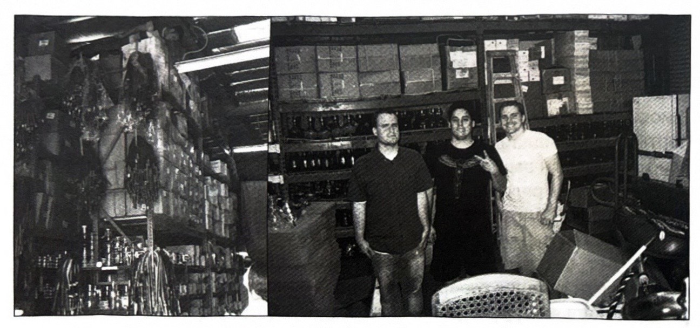
現在の REGAL HOOKAH の生産はどのようなものですか？
私たちは年々ますます多くを作っており、ブラジルには尽きることのない需要があります。私はまた、オーダーメイドのシーシャを作るオプションも追加し、唯一無二の品を製作しています。私はオーダーメイドの注文を週に1件しか受けられず、それは大変なことです。なぜなら、待機リストが丸ごとあり、その全員のために時間を見つけなければならないからです。
アメリカでシーシャを製造するうえで、どんな問題に直面しますか？
難しいのは需要を満たすことです。そしてアメリカで質の高い製品を作るには時間とお金がかかります。Regal のシーシャの大きなロットを作るために、生産に時間とお金を割くことは、常に問題でした。私たちの木材は、多くの職人たちの手を経てアメリカ中を旅します。そのため、時間の問題は解決が難しく、私は自分たちの木工職人たちに忠実です。ビジネスには常に問題がありますし、どんな製品の販売も決してスムーズには進みません。すべての要素が、欠点を最小限に抑えながら調和して結びつかなければなりません。
あなたはロシアのシーシャビジネスの多くの関係者と交流しています。ロシアの製品についてどう思いますか？
以前は、Hookah Boss が私たちのディストリビューターだったため、もっと多くのシーシャをロシアに売っていました。今は為替レートのせいで私たちの魅力が下がり、ロシアのシーシャはより革新的で高品質になっています。私はロシアのシーシャが好きですし、敬意を払っています。私のコレクションにもいくつかあります。たとえば VZ、MattPear、Shapes、Hoob などです。今でもロシアから小さな注文を受けることはありますが、以前とは比べものになりません。
カリフォルニアで観光客に勧めるラウンジはどこですか？
ロシア系のラウンジがカリフォルニアで最高だと言っても、嘘にはなりません。シーシャマスターたちは見事なボウルを詰めますし、内装のディテールへのこだわりや紅茶の選択も本当に素晴らしいです。サンディエゴの Art Hookah は必ず訪れるべき場所です。もしあなたがカリフォルニアを旅しているなら、そこで私と出会えるかもしれません。私はこの店でよく吸っているからです。ロサンゼルスのメルローズ地区にある Glass Hookah Lounge も最高です。それに、すぐ近くのハリウッドにあるラウンジ GQ と Mojo もそうです。本当に良い仕事をしている私たちのアルメニア系の仲間もいるので、グレンデールの Atmosphere に行く価値があります。そこではアルビ（Арби）が見事なタンジールズのボウルを詰めますし、料理も本当に美味しいです。
シーシャ以外には何をしていますか？
私はナイフを収集し、美味しいものを食べるのが好きで、旅行やサーフィンも好きです。もっとも、あまり頻繁にはやっていませんが。良い友人たちと一緒にいて、面白い会話を交わすのが好きです。それからもちろん、チル（くつろぎ）と Netflix が私の一日のお気に入りの部分です。とくにその日がとても長かった日には。
最近、木製デザインのシーシャがたくさん登場したことについてどう思いますか？
すでに上で述べたとおり、木のアイデアは私たちがシリア製のシーシャから取り入れたものです。誰かが自分自身のデザインでシーシャを作っても、私は決して気分を害しません。誰かが Regal のシーシャに着想を得て、私たちのいくつかの欠点を直し、それをより良くするなら、それは素晴らしいことです。一方で、ただ外見や形を真似しようとして、私たちの名前を貶める人々は、業界最悪の存在です。彼らは私たちのコミュニティを良くするどころか、イノベーションを抑圧し、私たちの業界をより魅力のないものにします。立派な業界であることは、法規制やその他の問題に直面しているなかで、私たちの長期的な存続にとって重要です。
アメリカでシーシャを製造するうえで、どんな問題に直面しますか？
難しいのは需要を満たすことです。そしてアメリカで質の高い製品を作るには時間とお金がかかります。Regal のシーシャの大きなロットを作るために、生産に時間とお金を割くことは、常に問題でした。私たちの木材は、多くの職人たちの手を経てアメリカ中を旅します。そのため、時間の問題は解決が難しく、私は自分たちの木工職人たちに忠実です。ビジネスには常に問題がありますし、どんな製品の販売も決してスムーズには進みません。すべての要素が、欠点を最小限に抑えながら調和して結びつかなければなりません。
アメリカで最も強いと考えるシーシャ製品は何ですか？
現在、最も成功している製品は、より高品質で、より狭いシーシャコミュニティの中で売られているものです。大学に通う18歳の若者向けの大きな市場の時代はとっくに過ぎ去り、今やそこではベイピング（電子タバコ）向けの製品が主流になっています。Tangiers、Regal、Lotus、Aviator のホース、それに High end Ceramic Heads（ハイエンドのセラミックヘッド）が、アメリカにおける主要な現代的シーシャ製品です。
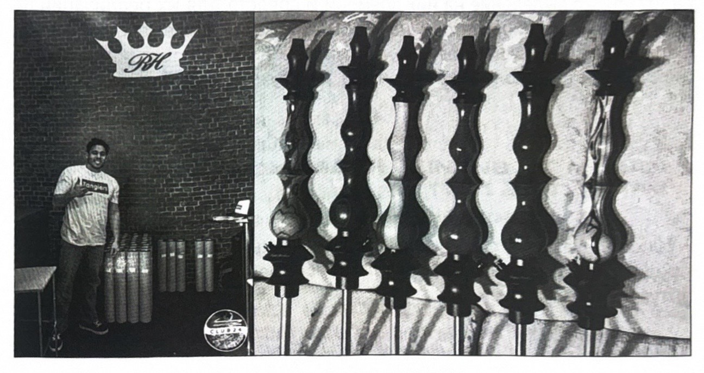
現在、生産には何人が働いていますか？
生産は数多くの手を経ており、自宅で作られた部品を受け取っています。私たちには、できる限りのことをしてくれる友人や家族がいます。
シーシャ以外に何かを出す予定はありますか？ ボウルやタバコなどです。
私はテストして開発した多くの製品を出す予定ですが、それらに時間と資金を割いて実現することは、優先事項のリストには入っていません。私たちは創業して最初の6年間、ソーサー（受け皿）すら持っていませんでした。ですから、私たちが構想したフラスコ、ホース、ボウル、ディフューザー、トングなどを無駄に待たないほうがいいでしょう。
5年後の REGAL HOOKAH をどう見ていますか？
私たちはシーシャの世界の頂点に立っているだろう、と言いたいところですが、おそらく今後も小さなクラフト・ロットを作り続け、シーシャ愛好家たちを幸せにしているでしょう。
あなたの最も重要な3つの功績は？
良き友人であり、たくさんの素晴らしい人々を自分のもとに迎え入れてきたこと。自分の家族と祖父母の面倒をみていること。18年間にわたって私たちの業界で主要な地位を占めていること。
あなたには、自分のモットーやインスピレーションを与えてくれる言葉がありますか？
「あるものは、あるがまま」。そいつは自分自身に忠実であり続ける。
好きなタバコのフレーバーを3つ挙げてください。
今のところ Tangiers Peach Cobbler、Horchata、そして Mime です。ある意味で、それらは私の仕事の一部を成しています。けれども、私の理解では、好みは頻繁に変わるものです。
本を3冊勧めてください。
『第1感「最初の2秒」の直感力（Озарение: Сила мгновенных решений）』。あるいはマルコム・グラッドウェル（Малкольм Гладуэлл）の他のどんな本でも。ノーム・チョムスキー（Ноам Хомский）の『Understanding power』。ジャレド・ダイアモンド（Джаред Даймонд）の『銃・病原菌・鉄（Ружья, микробы и сталь）』。挙げたものはすべて、私がいかに遅れをとっていなかったかを示しています。
ロシアでシーシャに携わっているすべての人へ、挨拶と一言をお願いします。
ロシアの数少ない友人たちについて大々的に語りたいとは思いませんので、ただシーシャコミュニティ全体に、世界最大級のシーシャ市場の一つであることに対して感謝を伝えます。また、ロシアが多くの面でシーシャ業界の水準を引き上げたことに対しても感謝したいと思います。
KALYANBALI
（インタビューからの抜粋）
アンドレイ（АНДРЕЙ）は、2014年からバリ島でデザイナーズ・シーシャを作っています。今やこのプロジェクトは世界中で知られています。
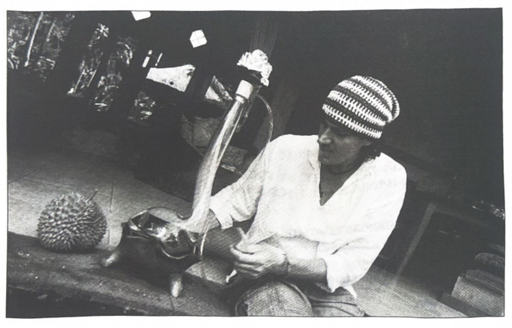
どうしてシーシャを作り始めようと決めたのですか？
偶然、そして必要に迫られてです。
バリ島へ引っ越すとき、荷物にはもうシーシャを入れる場所が残っていませんでした。エジプトやトルコのようなリゾート地なのだから、島で簡単にシーシャを買えるだろうと思ったのです。ところが、そこには「クジラが泳いでいた」（＝肩透かしだった）のです！ 島で唯一の店にあったのは中国製のガラクタばかりで、その店は今日に至るまで変わっていません。即興でやるしかありませんでした。店で珍しい形の手作りの花瓶を見つけ、日用品店でシリコンのチューブとホース用の真鍮の接続具を買い、ペンナイフと枝の一片を使ってシャフトの土台を作りました。そしてバリ島に着いてからちょうど1週間後、私の誕生日に、最初の Kalyanbali のシーシャが生まれました。それは今でも私たちのところに保管されています。
ほどなくして友人たちが似たようなものを作ってほしいと頼んできて、それから他の人たちも、というふうに、私はこれにのめり込み始めました。1カ月後にはシーシャを3台、1台500ドルで売りました。私たちはもう止まらなくなりました。バリ島に着いた人の中には、ビーチや滝を巡って遊ぶ人もいますが、私たちは最初の2年間、彫刻職人やガラス吹きの工房、それに自分たちのシーシャ作りに役立ちそうなあらゆるものを探して、村々や観光ルートから遠く離れた地域を巡っていました。こうして、島中から、そして今では近隣の島々からも、さまざまなパーツを少しずつ集めて、私たちはシーシャを作っているのです。
あなたのシーシャは、お手頃なものとは言えません。
価格はどのように設定されているのですか？
半年に一度、私たちは Kalyanbali コーポレーションの取締役会を招集します。専門アナリストたちの報告に耳を傾け、取引所の相場を確認し、戦略的に興味のある国々の経済の成長や後退を分析し、占星術師と相談し、コーヒーの澱で占い、コインが表に落ちれば値上げし、裏なら据え置きにします。
あなたのシーシャに見いだせる主な特徴は何ですか？
外見です。
一番大事なのは、それらが「瓶に刺さった鉄の棒」には見えないことです。
あなたたちの主な購入国はどこですか？
2014年の危機までは、主な購入者はロシアでした。売れたシーシャの10台中9台はそこへ飛んでいきました。けれども、またしてもルーブルが暴落した後、購買力はほぼゼロにまで落ち込みました。私たちはヨーロッパに切り替えました。その頃にはすでに世界中で私たちのことが知られていて、苦労せずに自分たちの買い手を見つけられました。Kalyanbali が存在してきた7年間で、私たちの作品は世界中の30カ国以上に飛び散っていきました。今のところドイツとフランスが首位で、両国で販売の70%を占めています。
あなたには好きなシーシャのモデルがありますか。もしあるなら、どれですか？
それは親に「子どものうち、誰が一番のお気に入りですか？」と尋ねるようなものです。私は自分が気に入らないものは何ひとつ作りません。でも、子どもの頃から私はドラゴンが大好きで、しかも辰年（ドラゴンの年）生まれなので、それらには少しだけ多くの注意を払っています。
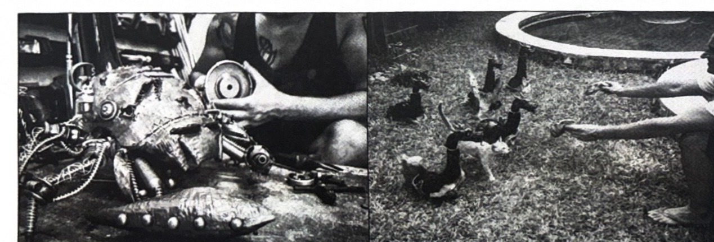
シーシャ以外にどんな製品を作っていますか？
すでに機能していて収益をもたらしているものとしては、私たちのオリジナルの宝飾品があります。私たちのコレクションには、シルバーとワニやニシキヘビの革のブレスレット、半貴石のブレスレット、指輪、それに人気となった個人用のシルバー製マウスピースがあります。私たちはとても腕の良い宝飾職人を見つけました。それは簡単ではなく、探すのに時間とお金を費やし、製品の品質に確信が持てるようになるまでに、何人かと組んで試してみる必要がありました。
私がデザインを考え、画像を選び、正確な寸法でスケッチを描き、職人と一緒にワックス原型を作り込みます。これは蝋から手作業で彫り出した製品の正確な複製で、これをもとに鋳造用の型が作られます。これは魂のない3Dプリンターではなく、本物の手仕事の宝飾作業です。私たちは革の供給業者と会い、ブレスレット用の一枚一枚の革を自分たちで直接選びます。自分の工房でユリャ（Юля）が、私たちが販売しているブレスレットやシーシャ用のホースを一つひとつ裁断し、自ら縫っています。私たちには、順番を待っている面白いプロジェクトがまだいくつかあります。
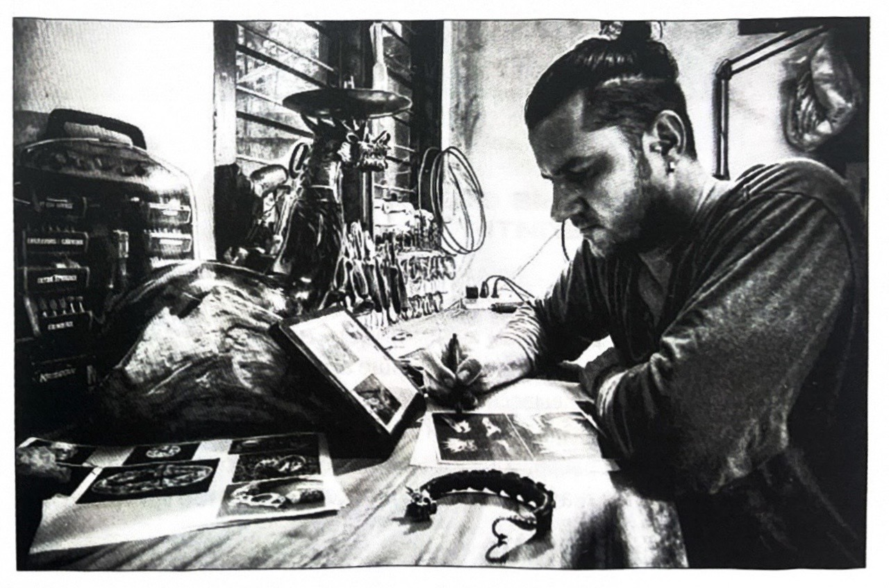
SHISHA TEMPLE について話してください。お店を開こうというアイデアはどうやって思いついたのですか？
そのアイデアは、私たちが本格的にシーシャ作りに取り組み始めてからほどなくして浮かびました。私たちにはショールームが必要でしたし、それにバリ島には良いシーシャ店もシーシャもタバコもなく、まさに手つかずの分野でした。私たちの個性的なシーシャは、間違いなく注目を集めるはずでした。そして、実際にそうなったのです。
どんな主な特徴を挙げられますか？
私たちはたくさんのタバコのフレーバーを取り寄せていて、これほどの品揃えはインドネシア中どこにもありません。私たちは、自分たちのシーシャを置きたいと思う、そしてそのエスニックなスタイルを引き立てる内装を作りました。これは私たちの手作りのアート空間で、通りの看板からトイレに至るまで、すべて自分たちで作りました。ユリャが描いた絵、私が作った家具とシーシャ、島中から集めた、あるいは個人的に知っている職人たちが作った食器や内装の一つひとつ。これが私たちの家なのです。
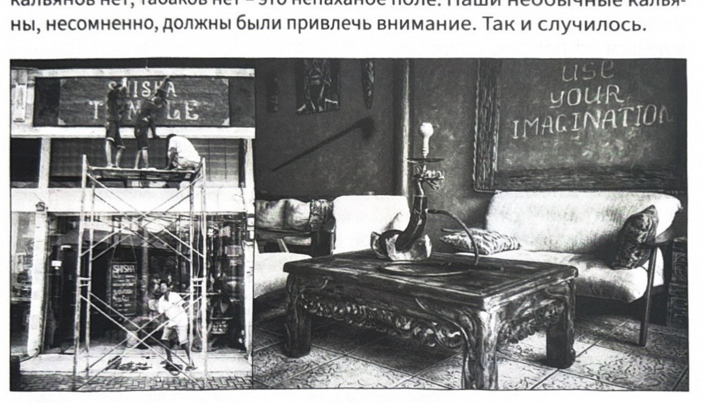
バリ島でビジネスを始めるのは難しいですか。そしてそれをやろうとする人にはどんな困難が待ち受けていますか？
始めるのは簡単で、すべてを台無しにするのはもっと簡単です。最大の難しさは、地元の人々との相互理解です。「お客様は常に正しい」とか「俺はお前に金を払っているんだから、さあやってくれ」といった言葉が彼らにとって無意味な響きでしかないと理解できるくらい、島で十分に長く暮らさないうちは、何かを始めようとしないほうがいいでしょう。
どんな機材とタバコを使っていますか？
私たちは自分たちのシーシャだけで営業しています。それこそが自分のシーシャ店を開いた意味でした。多くのお客様が、Kalyanbali で吸い、私たちと交流するために、わざわざ私たちのところへやって来ます。
私はロシアからボウルを取り寄せています。今稼働中なのは ST、Облако（オブラコ）、Japona hookah、Harvik、Smokelab、Cosmo… などです。
メニューには Tangiers、Fumary、Nakhla、Adalya、Alfakher、Darkside、Wto、Mattpear、Spectrum、それに他にも数種類のフレーバーのある別のブランドがいくつかあります。
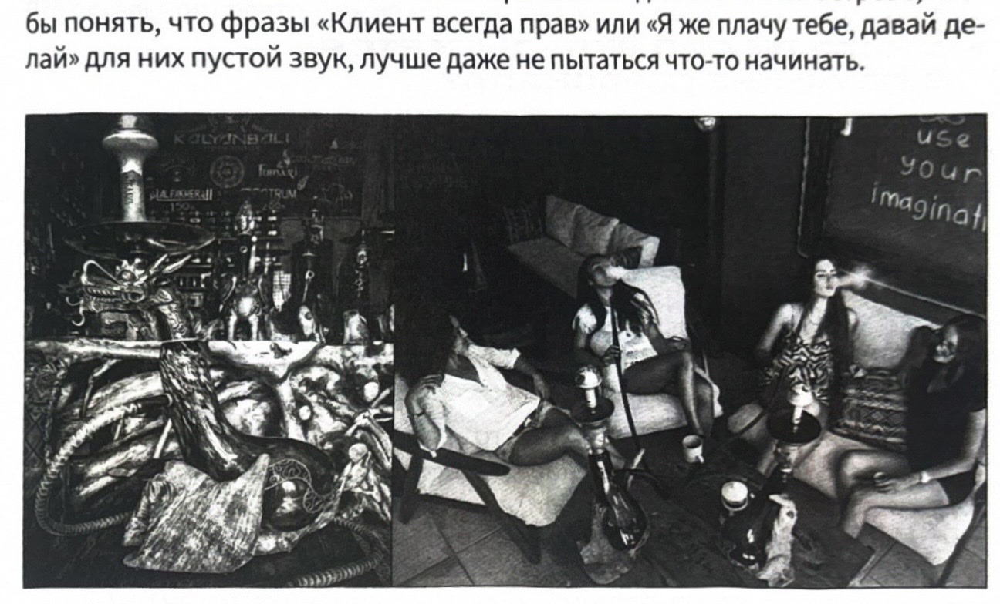
シーシャ店のスタッフはどうやって探していますか？
Facebook のグループや人材紹介会社があります。
スタッフの教育にはたくさんの力を注いでいますか？
いや、それほどでもありません。1週間のうちに、その人を教育するかしないかは分かります。教育に、自分が費やす覚悟のある以上の力が必要になるなら、別の人を探したほうが手っ取り早いです。代わりのきかない人などいません。
SHISHA TEMPLE のお客様はどんな人たちですか？
お客様の80%はロシア語話者で、ヨーロッパ人、アラブ人、インド人もたくさんいます。私たちはバリ島の基準からするとまったく安くはない店なので、隣のテーブルでプレイステーションに興じて騒ぐガキの群れではなく、静かな休息を好む、裕福な大人の人々が来てくれます。
あなたの見るところ、バリ島のシーシャ業界はどのように発展していますか？
ゆっくりとです。難しさのすべては、インドネシアへの輸入シーシャ、タバコ、アクセサリーの輸送にあります。物流費と関税が非常に高いのです。税関職員の無法ぶりにはただ驚かされます。ジャカルタであった話を聞きました。1台100ドルのシーシャ10台の通関のために、税関職員が彼らから1500ドルをむしり取ったというのです。これでどうやって「業界」を発展させろというのでしょう？
バリ島には、アウトソーシングを手がけるロシアの若者がますます増えていて、いろいろな店にシーシャを置き、タバコを取り寄せ、シーシャ職人を教え、フェスまで開いています。それはすべて素晴らしいことですが、私は別の道を行きます。彼らは「ムーブメント（盛り上がり）」を作りたいのですが、私はヨットを買いたいのです。
SHISHA TEMPLE 以外に、何か挙げられる場所はありますか？
Shisha cafe です。これはおそらくバリ島で最古のシーシャ店で、独自の雰囲気と、クラシックなアラブ風の美しい内装、それになかなかの料理があります。シーシャに関してはあまり良いとは言えず、中国製の機材に Alfakher です。それ以外は勧められません。行ったことも、試したこともないので。
あなたはロシアのシーシャ市場を追っていますか。もし追っているなら、誰を挙げられますか？
私はロシア市場だけでなく、ヨーロッパやアメリカの市場も追っています。私の朝はコーヒー1杯と1時間のインターネットから始まります。Facebook と Instagram を見て、そこでは膨大な数の海外のシーシャコミュニティをフォローしています。ロシアのシーシャ市場がいまだに抜け出せずにいる VKontakte と Telegram にも目を通します。新作の発売を追っています。今年は何が流行りなのか、軽いドローなのか速い吹き出しなのか、自社のタバコや炭を作ることなのか、ブロガーやインフルエンサーの浮き沈み、それにスキャンダルや陰謀、暴露などを追いかけ、見ては、自分がそれに関わっていないことを喜んでいます。公に誰かを挙げたいとは思いません。それは個人的な交流の中ですることで、ある人とは会って話してみたいと思うし、ある人は避けて通ります。
ロシアのシーシャ系ブロガーは見ていますか？
見ていますが、ブロガーは片手の指で数えられるほどです。シーシャ文化、業界の発展、誠実なレビューなどと声高に叫ぶレビュアーの数え切れない群れがいます。彼らの大多数が、汚い言葉なしには2つの言葉すらまともに繋げられないというのに、どんな文化を語れるというのでしょう？ 彼らは自分たちの「DQN（ガラの悪い若者）」な視聴者を未成年者の中から選び、その層を良くしようとはせず、彼らのレベルにまで自分を落として、その大衆と彼らの言葉で語り合っています。
「誠実なレビュー」のおかげで、そういうものを2、3本見て、私は自分のシーシャ店向けにあるブランドのタバコを仕入れました。バリ島へのタバコの取り寄せはそれはもう一苦労なのですが、メーカーの言い分によれば、その製品は未熟な状態で出てしまい、改良のために回収されました。今ではそれを自分たちで吸い切るしかなく、「誠実な」ブロガーたちに善意の波動を送っています。
どいつもこいつも、やっていることはまったく同じです。開封、巻き付け、同じようなシーシャの喫煙、ボウルの詰め込みと提供、そして最初の一吸いの後に下す自分の「専門家としての見解」、つまり新しいタバコの味が「クソまずい」のか「トップ（最高）」なのか、というわけです。
大まかに言って、こういったレビューが必要なのは、そのシーシャやタバコのメーカーだけです。彼らはレビュアーのつらい労苦に気前よく金を払って、自分たちのページに広告として動画を載せます。私は確信しています。そんな5分間のレビューに有名な俳優や芸能人を起用したほうが、もうすでに安上がりでしょう。そしてそういう広告の利益は、水増しされたフォロワーのかたまりを抱えたチャンネルから得られるものよりも、はるかに濃厚なものになるでしょう。このアイデアはみんなにあげます。
P.S. 私たちは一度たりとも誰にも無料でシーシャを送ったことはありませんし、レビューや広告に1コペイカも払ったことはありません！ そしてこれからもそうするつもりはありません。
ロシアには、あなたのシーシャに否定的な態度をとる人々が一定数います。この件についてどう思いますか？
この件についてはとうの昔に考えるのをやめました。もし私がこれについて考え始めたら、その場で足踏みするか、後ろへ這いずるかになるでしょう。否定的な意見は主に価格だけから生まれるものです。それは「自分にとって高いなら、それは悪い、だいたいこんなもの誰が必要とするんだ」というプロレタリアートのメンタリティです。
公の場で、フォーラムやチャットで「クソ高すぎだろ！」「そもそも誰がこんなものを買うんだ？」「ガレージで瓶から吸ったほうがマシだし、それで十分だ！」「世界も俺たちの業界もどこへ向かっているんだ？」などとわめき出す人々には驚かされます。あるいは「ブロガー」が動画を撮って、大真面目に我々のシーシャとハリル・マムーン（Khalil Mamoon）を比較したりします。それなりに大人で、働ける人間が、自分の無能ぶり、生活水準の低さ、成長したくない、より良いものを目指したくないという気持ちを、どうしてこうも声高に世間に向かって宣言できるのでしょうか。
彼らはその陰気な人生をずっと、「イケア（IKEA）」の家具やペットボトルの安ビールを好む同類の連中に向けて、自分たちのクソみたいなシーシャラウンジでタンジュ（Tangiers）を300ルーブルで売り続ける運命にあるのです。
ある社会階層が存在するということを、覚えている人も理解している人もほとんどいません。そこでは非常に裕福な人々が、普通の人の大半が一か月かけて稼ぐ以上のお金を、ただの昼食に費やすことができるのです。彼らはVKontakteに入り浸っておらず、Instagramも持っておらず、シーシャブロガーのレビューを見ることもなく、Telegramでチャットすることもありません。彼らには別の社会生活と関心事があるのです。だから私は、誰が我々の作品を買うのか、それについて何を考え、何を語っているのかを知っています。文化的な深淵の向こう側からの放屁や、下層社会階層からのゴボゴボという音は、こうした人々のもとには届きませんし、私のこともとうに悩ませなくなりました。
自分でSNSの全ページを運営しているので、ほぼ最初の頃から我々の創作を追いかけてくれているものの、まだそれを手に入れる余裕のない大勢の人々を、私は見て知っています。彼らがコメントを書き、ダイレクトメッセージを送ってくるのを私は見ています。それは私にとって嬉しいことであり、いつも返信するよう努めています。私が考えているのは、まさにこのことです。これこそが、我々を前進させ、成長させる原動力なのです。
我々と仕事をするのは大変だという否定的な意見も、やはりかなり主観的なものです。我々の店でおよそ三年間、かなり過酷な体制で働いてきた経験が私に示したのは、それが我々のシーシャを使ったことがない人々、あるいは使い古されて転売された古いモデルを使った人々の出した結論だということです。
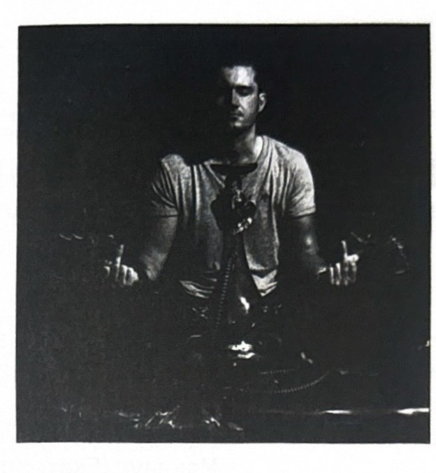
ロシアで生産されているシーシャの最新リスト ［ 2020年夏 ］
Хулиган（クラスノダール）
Мамай Customs（サマーラ）
Mir Hookah（ムイティシ）
Target（クラスノダール）
Tongs（カルーガ）
Ash Wood（ペルミ）
Capsule（クラスノダール）
Agach（カザン）
Voodoo smoke（モスクワ）
Ess Hookah（トヴェリ）
VZ（クラスノダール）
DSH（クラスノダール）
LikeSmoke（キーロフ）
Craft（ノヴォシビルスク）
Космо（エカテリンブルク）
Hellfire（カザン）
Hookah Mason（モスクワ）
Ferro（ヴェリーキー・ノヴゴロド）
Dalian（サンクトペテルブルク）
На грани（イジェフスク）
Nube（クラスノダール）
Механика（オレンブルク）
Nejn（ポドリスク）
Эйфория（ミアス）
Shadows Hookah
DymMachine（トヴェリ州）
Fox（ロストフ）
Альфа Hookah（サンクトペテルブルク）
JaponaHookah（サンクトペテルブルク）
Conceptic Design（サンクトペテルブルク）
Choby（ウファ）
Горький（ニジニ・ノヴゴロド）
Маклауд（エカテリンブルク）
Shapes（モスクワ）
Hookah Irk（イルクーツク）
Werkbund（ニジニ・ノヴゴロド）
Хардвуд（モスクワ）
SmokeAngels（モスクワ）
Neolux（チェリャビンスク）
Пиздюк（カザン）
Tortuga（オムスク）
Смоклаб（オムスク）
Fekolin（リャザン）
HookahTree（ペンザ）
Volcano（モスクワ）
Romatti（セルギエフ・ポサド）
Retrofit（ロストフ・ナ・ドヌー）
Отивана（サンクトペテルブルク）
First Hookah（ソチ）
RF（クラスノダール）
Пушка（エカテリンブルク）
Vesper（ニジニ・ノヴゴロド）
Hoob（モスクワ）
DarkMatter（タガンログ）
Darkside（モスクワ）
Orden（モスクワ）
Don（ロストフ・ナ・ドヌー）
DDI Hookah（ウファ）
Chosen（モスクワ）
Venture Hookah（クラスノダール）
ML Clan（ヤルタ）
BigMaks（サンクトペテルブルク）
Marmor（ニジニ・ノヴゴロド）
Pandora（カザン）
Nanosmoke（サンクトペテルブルク）
El Bomber（クラスノダール）
Softsmoke（サンクトペテルブルク）
Душа（エカテリンブルク）
Solomon Hookah（サンクトペテルブルク）
ShiCarver（セルギエフ・ポサド）
Веремчук（ペンザ）
AG（チェリャビンスク）
Геометрия（クラスノダール）
Водо（モスクワ）
У.К.А.Р（オムスク）
Frigate（モスクワ）
Vortex（カザン）
ЧКСЗ（チェリャビンスク）
VS Hookah（ヤロスラヴリ）
Cobra（モスクワ）
Ю4（クラスノダール）
Black fire（ロストフ・ナ・ドヌー）
Мэт пир（クラスノダール）
Rocket（タガンログ）
Стерхов
Blade hookah（オムスク）
F.Corp（サンクトペテルブルク）
Qub Hookah（サンクトペテルブルク）
Юнион（ニジニ・ノヴゴロド）
Avion（コロムナ）
Cwp（モスクワ）
S.Steel（トリヤッチ）
Koress（サンクトペテルブルク）
Bamboo Hookah（カザン）